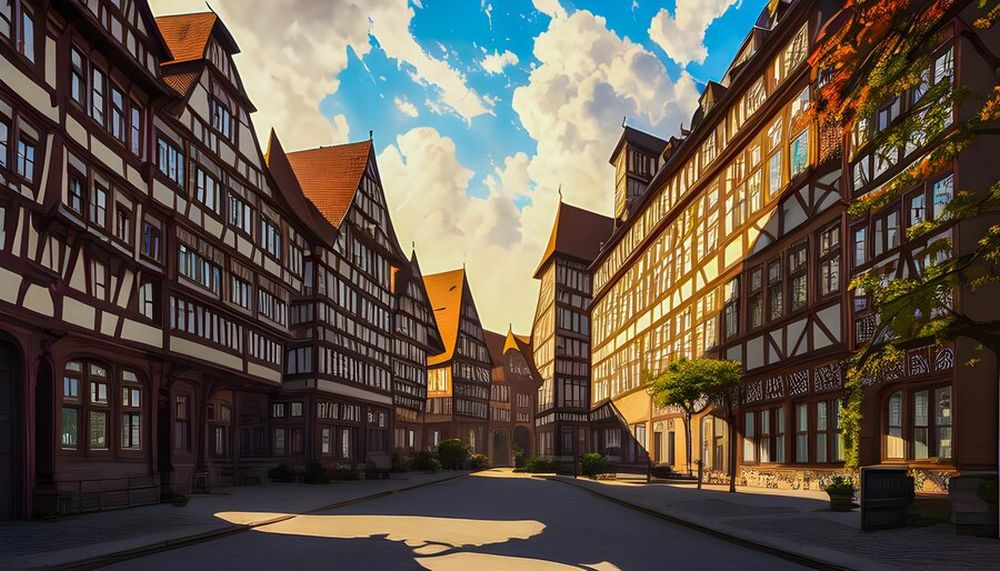

Descoperă Nürnberg - O incursiune în orașul istoric
Nürnberg (Nuremberg) este un oraș istoric din Germania, oferind o gamă variată de atracții pentru vizitatori:
-

Castelul din Nürnberg - Cetate impunătoare
Această fortăreață medievală oferă priveliști impresionante asupra orașului și găzduiește muzee și expoziții.
-

Centrul istoric - Farmec medieval
Străduțele înguste și piețele medievale au păstrat atmosfera autentică a orașului.
-

Palatul Justiției - Istorie contemporană
Aici au avut loc Procesele de la Nürnberg, marcând sfârșitul celui de-Al Doilea Război Mondial.
-

Muzeul Național German - Patrimoniu cultural
Acest muzeu oferă o colecție impresionantă de artefacte istorice și culturale din Germania.
-

Piața centrală - Viață vibrantă
Piața găzduiește evenimente, târguri și festivaluri și este locul perfect pentru a simți pulsul orașului.
Concluzii
Nürnberg îmbină istoria cu cultura contemporană, oferind o călătorie fascinantă în timp pentru vizitatori.